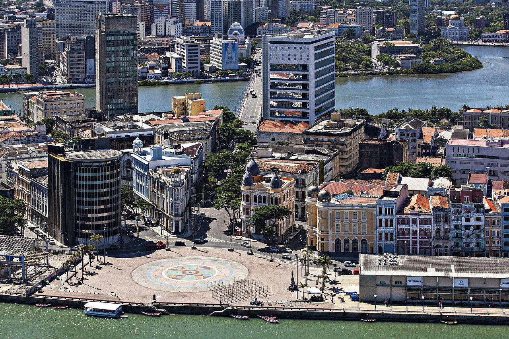
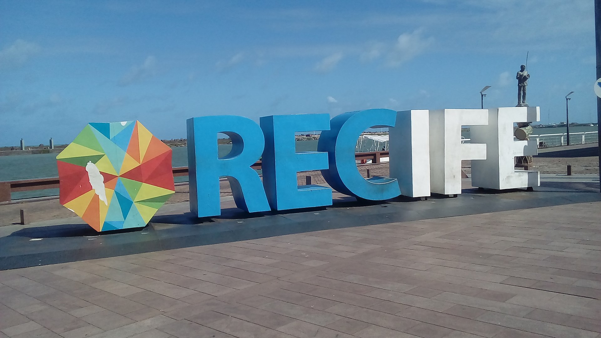
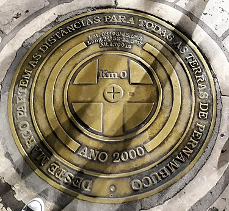
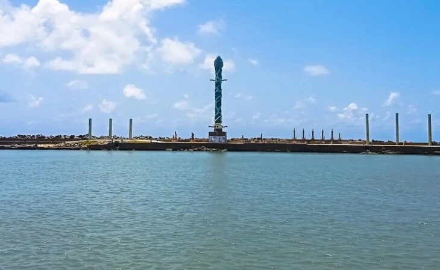
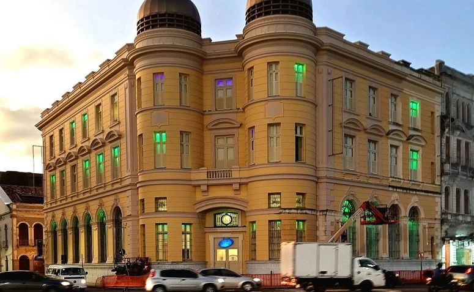

Explorando o Encanto do Marco Zero em Recife
Bem-vindo à nossa página dedicada ao icônico Marco Zero de Recife! Aqui, você encontrará tudo o que precisa saber sobre este local histórico e culturalmente rico, localizado no coração da capital de Pernambuco, Recife.
Índice
O que é o Marco Zero?
O Marco Zero de Recife é muito mais do que um simples ponto geográfico; é o ponto de partida para explorar a rica história e cultura desta cidade incrível. Este marco é um símbolo de identidade para os recifenses e uma parada obrigatória para todos os visitantes.
História
O Marco Zero tem raízes profundas na história do Brasil. Foi construído em 1938 para marcar o início da contagem das coordenadas geográficas do país. Desde então, tornou-se um local de grande importância histórica, marcando o início da jornada cultural e artística de Recife.
Localização
O Marco Zero está localizado no bairro do Recife Antigo, na confluência dos rios Capibaribe e Beberibe. Compreende a região da Praça Barão do Rio Brdanco, que está situada no município de Recife, no estado de Pernambuco. Sua localização estratégica o torna um ponto de encontro natural e uma base perfeita para explorar a cidade.
Dicas
Antes de conhecer as atrações que cercam o Marco Zero, aproveite também para ficar por dentro de dicas e informações essenciais sobre o local. Assim, é possível planejar melhor a viagem e aproveitar a atração com segurança:
- Melhor horário para ir: escolha passear pela região durante a manhã. Neste período o número de visitantes é menor e as temperaturas estão mais amenas.
- Estacionamento: há boas opções de estacionamento nas proximidades do Marco Zero. Você pode estacionar na Praça do Arsenal ou no shopping Paço Alfândega.
- Estrutura: a região conta com um comércio forte, que reúne excelentes bares, restaurantes e cafeterias. Além disso, o local possui diferentes opções de hospedagens.
- Como visitar: há várias atrações no Marco Zero, então é importante reservar pelo menos 1 dia para aproveitar as atividades da região. O ideal é montar um roteiro para organizar todas elas.
Atrações próximas
- Paço do Frevo: A poucos passos do Marco Zero, este museu celebra o Frevo, um estilo de música e dança local.
- Cais do Sertão: Um museu interativo que homenageia a cultura do sertão nordestino.
- Ponte Maurício de Nassau: Uma bela ponte que oferece vistas espetaculares do Marco Zero e do Rio Capibaribe.
- Igreja de São Pedro dos Clérigos: Uma igreja barroca deslumbrante que vale a pena visitar.
Fotos
    Conclusão
O Marco Zero de Recife é um local emblemático que encapsula a essência vibrante e histórica da cidade. Explore suas atrações, mergulhe na cultura local e aproveite cada momento neste lugar especial. Esperamos que você desfrute da sua visita!